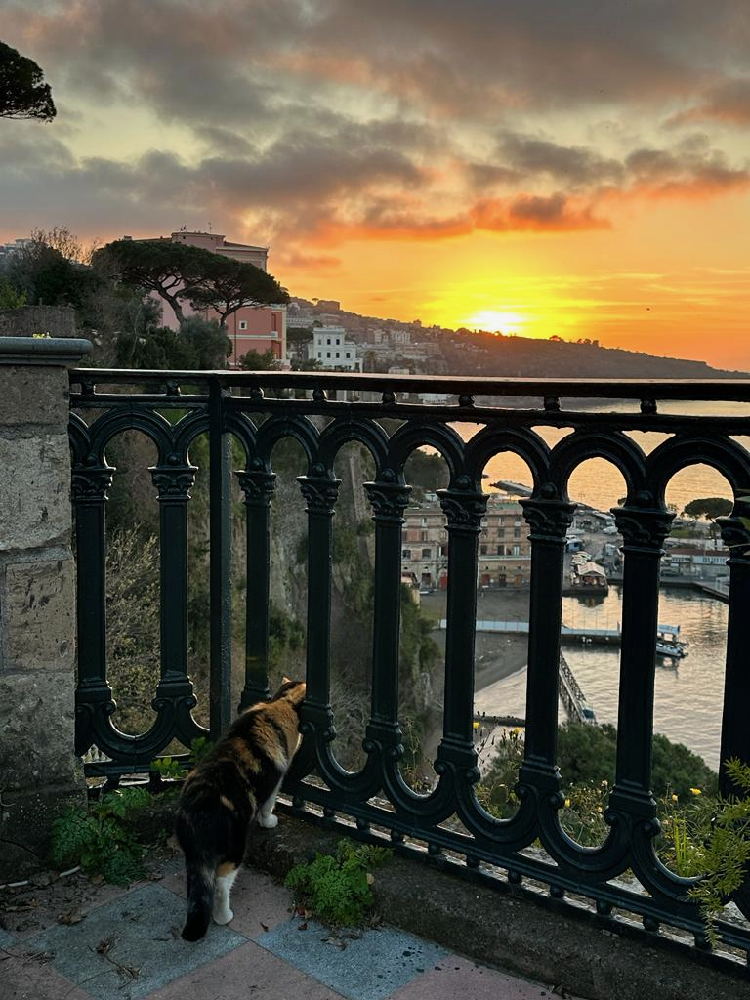

Welcome!
You have landed on my homepage.
My name is Oliver.
I am a second-year math PhD student at the University of Maryland, Baltimore County.
If you are looking for more information about me, you can find a short bio and a link to my curriculum vitae on my About Me page, along with my professional contact information.
If you want to know more about my work, check out my Research page.
If you are one of my students and are looking for information about a class you are currently taking with me, see the Teaching page.
In addition to my mathematical inclinations, I am also a writer.
You can learn about that side of my work on the corresponding page.
My blog is a random collection of musings about current happenings in the world and my life.
Some, but not all, of it is math related.
The page titled Useful Stuff has links to various resources that might be helpful to anyone in or intersted in being in my professional circles.
The Cool Stuff page is just an almagamation of things I like--movies, music, etc.
My website is still under construction. Many of links are probably broken right now. I'm working to get everything up and running as quickly as I can.